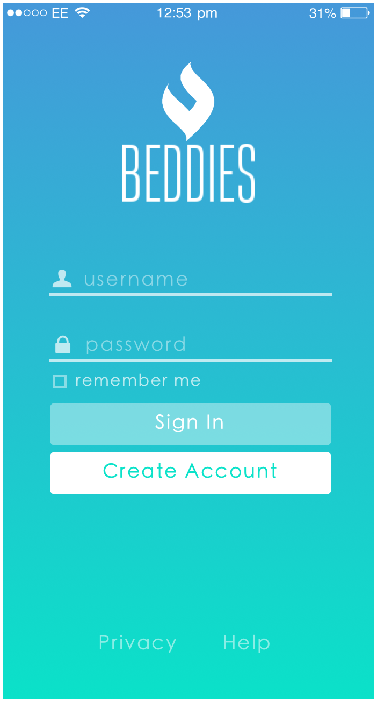
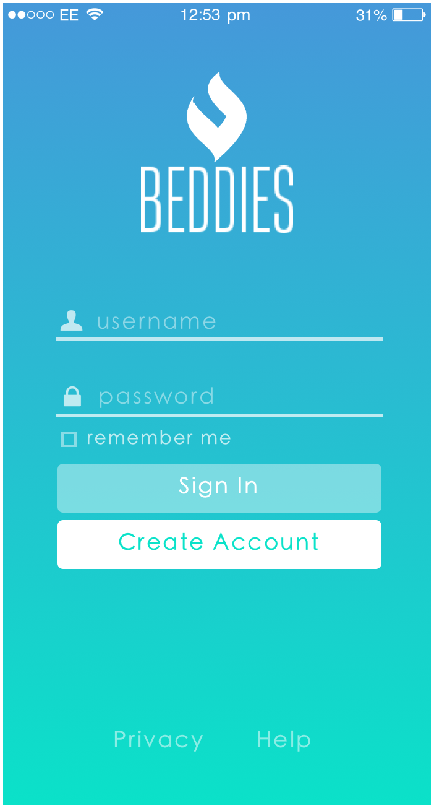

Sites
 covertise marketing covertise marketing
html, css Landing Page |
 cambry fitness cambry fitness
html, css, javascript Landing Page |
 schoolitup schoolitup
php, html, css, js, sql, photoshop Landing Photos Section |
 kelso bikes kelso bikes
html, css, javascript Landing Page |
 crumyum crumyum
html, css, js, pinta, sketch Landing Page Recipe Page |
 rm construction rm construction
html, css Main Site |
 kyasto kyasto
html, css, js, paint.net Site (before client info update) |
 jonathanbelok.com (old) jonathanbelok.com (old)
html, css, js First & Second |
Mockups


 
